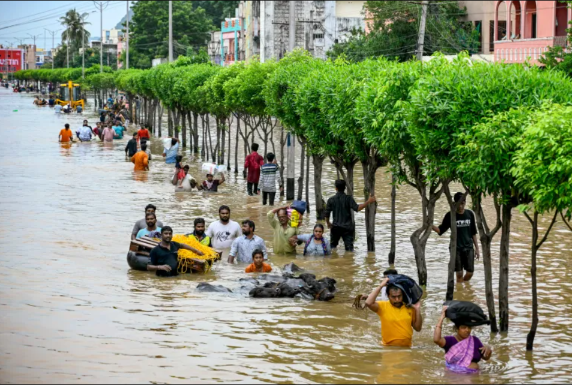

Faqs and tips - Small Steps, Big Impact
Being prepared for floods and knowing how to respond can significantly reduce risks to life and property. By following these tips and staying informed from the faqs, you can help protect yourself, your family, and your community from the devastating effects of flooding.
Frequently Asked Questions (FAQs)
- What should I do before a flood occurs?
- Preparation is Key: Create an emergency plan that includes evacuation routes, communication strategies, and a designated meeting place for your family. Assemble an emergency kit with essential supplies such as water, non-perishable food, medications, flashlights, batteries, and important documents.
- How can I stay informed about flood risks in my area?
- Stay Updated: Sign up for local weather alerts through your city or country’s emergency management office. Follow the National Weather Service (NWS) and local news outlets for real-time updates on weather conditions and flood warnings.
- What should I do if a flood warning is issued?
- Act Quickly: If a flood warning is issued, follow your emergency plan. Evacuate if instructed to do so, and avoid driving through flooded areas. Move to higher ground and stay away from rivers, streams, and creeks.
- How can I protect my home from flooding?
- Mitigation Measures: Consider elevating your home, installing sump pumps, and using flood barriers. Ensure that gutters and downspouts are clear and direct water away from your foundation. Landscaping can also help by creating swales to redirect water.
- What should I do after a flood?
- Safety First: Before returning home, ensure that it is safe to do so. Check for structural damage, gas leaks, and electrical hazards. Document any damage for insurance claims and contact your insurance provider as soon as possible.
- How can I help my community recover from a flood?
- Get Involved: Volunteer with local organizations that assist flood survivors, donate to relief funds, or participate in community clean-up efforts. Advocacy for better flood management policies is also crucial for long-term recovery.
Tips
- Before a Flood:
- Stay Informed: Monitor weather forecasts and flood alerts.
- Create an Emergency Kit: Assemble a kit with essential supplies, including water, non-perishable food, medications, a first-aid kit, and a flashlight.
- Develop an Evacuation Plan: Identify safe evacuation routes and designate a meeting point for your family.
- Protect Your Home: Elevate valuables, install flood barriers, and consider flood insurance.
- During a Flood
- Evacuate: Follow evacuation orders and move to higher ground.
- Avoid Floodwaters: Never walk or drive through floodwaters.
- Turn Off Utilities: Turn off electricity and gas at the main switches.
- Stay Informed: Listen to local news and emergency broadcasts for updates.
- After a Flood
- Prioritize Safety: Avoid floodwaters and electrical hazards.
- Document Damage: Take photos and videos of damage to your property for insurance claims.
- Clean Up Safely: Wear protective gear and follow safety guidelines when cleaning up after a flood.
- Seek Professional Help: Consult with professionals, such as contractors and restoration specialists, for major repairs.
- Support Your Community: Volunteer your time to help others affected by the flood.
- Practice Mental Health Self-Care: Seek support from mental health professionals to cope with stress and trauma.
- Long-Term Recovery
- Rebuild Responsibly: Consider flood-resilient building techniques when rebuilding your home.
- Stay Informed: Continue to monitor weather forecasts and be prepared for future floods.
- Community Engagement: Participate in community efforts to reduce flood risks and improve disaster response.
Gallery - Visual Stories of Recovery.
This gallery captures the profound impact of floods in India, highlighting the resilience of survivors, the bravery of rescue teams, and the community efforts that emerge in the face of adversity.
Through these images and videos, we aim to raise awareness about the challenges faced by flood-affected communities and the importance of preparedness and support.
